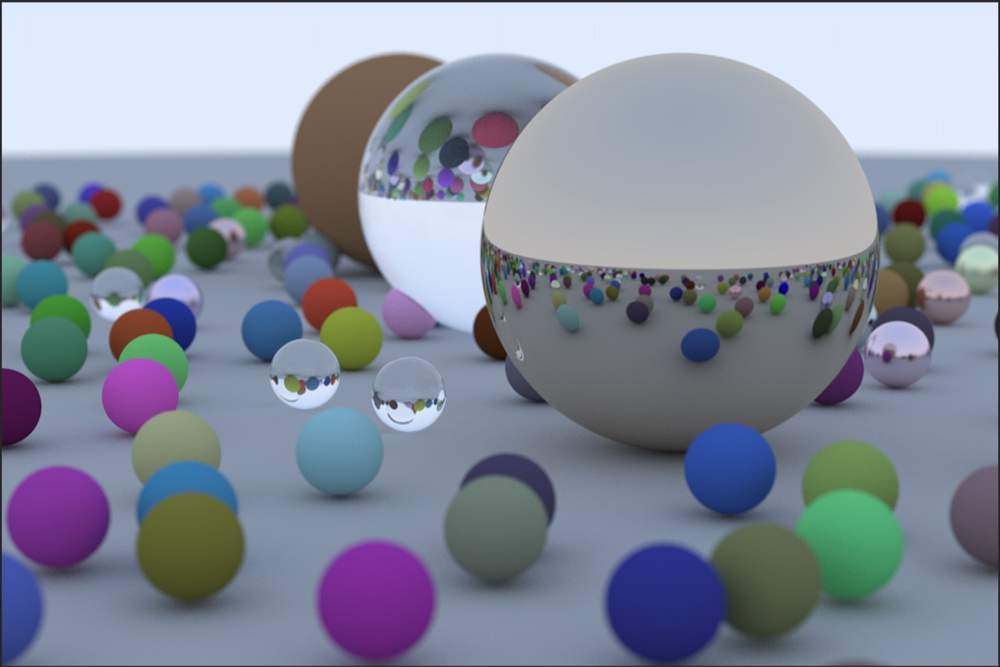
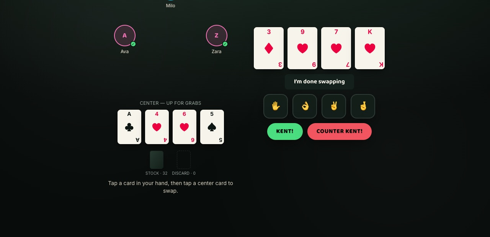
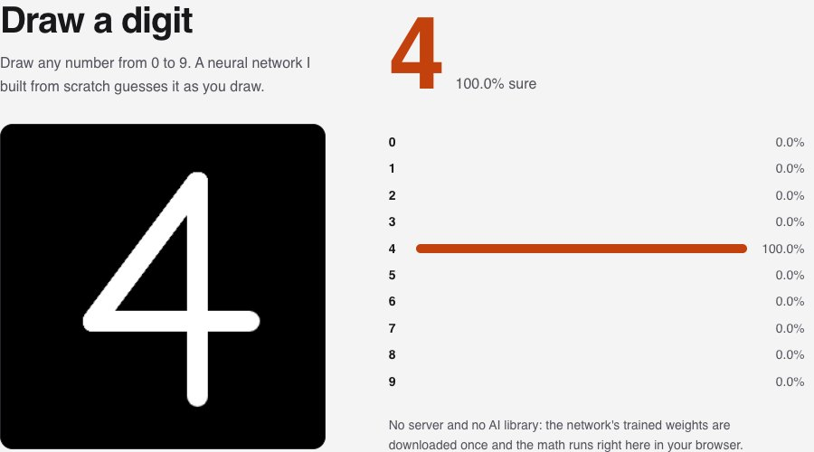
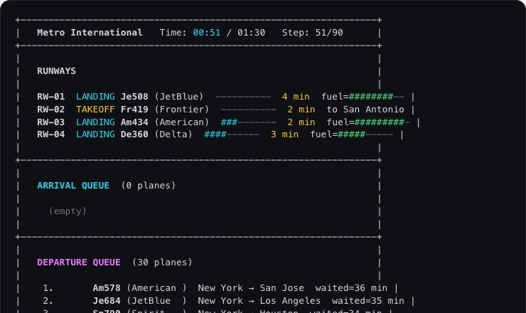

Things I build on the side.
Games, tools and experiments. Some you can play right here in your browser, the rest you can read and run.

Try them in your browser
No install, no setup. Open the link and go.

Kent
A card game from my childhood. Collect four of a kind, then secretly signal your partner with a hand gesture before the other team catches you. Play against bots.
TypeScript · React Play KentStreak
A calm, minimal habit tracker. One tap a day to keep your streaks going, synced across your devices.
React · Supabase · installable on your phone Open StreakCode Review
Paste code, share the link, and comment on any line. Everyone viewing sees new comments instantly.
React · Node · Socket.io · PostgreSQL Open Code Review
Draw a Digit
Draw a number and a neural network I wrote from scratch guesses it as you draw.
Python + NumPy model, running in your browser Try it
Airport Simulator
Watch planes land, take off and declare fuel emergencies, minute by minute. Pick a quiet airport or one with too few runways.
C++, real program output Watch it runMore projects
The rest live on GitHub, each with a write-up of how it works.
Built from scratch
- Ray TracerC++Renders realistic 3D scenes with matte, metal and glass, from first principles.
- InterpreterJava, CA small programming language, built twice: once as a tree-walker, once as a bytecode VM.
- Packet AnalyserCCaptures live network traffic and decodes each packet by hand.
- Neural NetworkPythonThe model behind Draw a Digit: training, backpropagation and all.
- HeroFightC#A text RPG: pick a class, clear seven rooms, beat the Ancient Dragon.